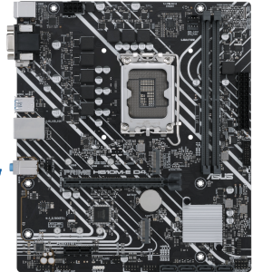
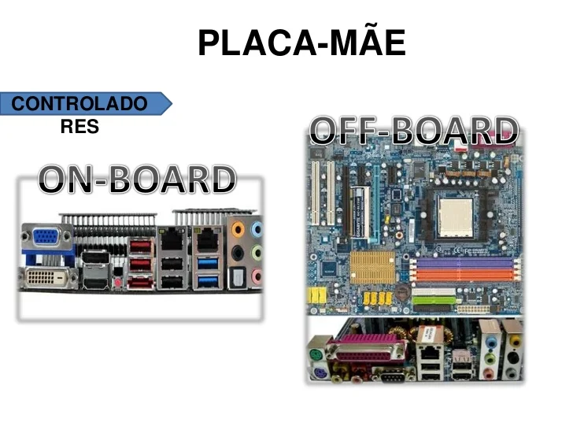

2.Defina “placa mãe”.
A Placa mãe é um dos se não o circuito principal ou "coração" do computador, pois ela que permite o tráfego da informação de diversos componentes(informação=pulsos elétricos),nela que fica a maioria dos componentes e onde
todos são conectados entre si, e com a energia fornecida da fonte ela alimenta os componentes ligados a ela.

3. Diferencie placas mãe on-board e off-board.
Placa mãe on board é aquela que possui os outros dispositivos integrados do computador na placa.(no caso do exemplo abaixo só é adicionada a placa de vídeo "conector azul").
Já a Off-board é o oposto onde "não há" dispositivos integrados na placa, sendo necessário comprar-los separadamente.

16.Na placa mãe temos alguns eletrônicos, comente cada um deles e suas variações, sendo:
- a. MOSFET
- É uma classe de transistores que é utilizado para amplificar sinal enviado pela unidade principal para alimentar
os altos-falantes de equipamentos eletrônicos.
Suas versões: Lateral Mosfet, Mosfet de Dupla difusão, Mosfet Vertical, Mosfet T
- b. Transistores
- São usados para amplificar ou trocar sinais eletrônicos e potência elétrica.
Suas versões: TBJ – Transistor Bipolar de Junção, FET – Transistor de Efeito de Campo, que é subdividido em MOSFET, JFET, MESFET, entre outros
IGBT – Transistor Bipolar de Gate Isolado-
i. Quantos tem dentro de um processador?
- Milhões pois este tipo de mecanismo é usado desde antigamente por exemplo o core 2 duo que possuia cerca de 291 Milhões de transistores.
- c. Capacitores
- A função mais básica do capacitor é a de armazenar cargas elétricas em seu interior.
Durante as descargas, os capacitores podem fornecer grandes quantidades de carga elétrica para um circuito.
Suas versões: Capacitores eletrolíticos, poliéster, tântalo, óle, variáveis e cerâmicos.
- d. Resistores (fixos e variáveis)
-
- A função dos resistores é converter energia elétrica em energia térmica.
Suas versões: Fixos e Variáveis.-
17.Placas mãe mais antigas possuíam 2 Chipset (ponte norte e ponte sul). Defina e dê suas funções.
Ponte Norte: É o chip responsável por controlar os componentes rápidos, como a CPU,GPU e RAM fazendo que eles solicitem infomações do HD.
Ponte Sul: É responsável por controlar os componentes "lentos" que são os HDS,USBS,Paralela e PS2.
18.Para a placa mãe funcionar é necessário o fornecimento de energia. Comente sobre todos os tipos destes conectores e suas devidas voltagens.
24PINOS: É o conector de alimentação padrão em placas-mãe.
Ele fornece energia para alimentar a placa-mãe e diversos circuitos e dispositivos a ela conectados, tais como a CPU, memória RAM, placas de expansão e o chipset, entre outros.
voltagem: 20w-80w
SATA/PATA: Ambas posuem finalidades parecidas sendo usadas para a transferência de dados entre dispositivos de armazenamento em massa (unidades de disco rígido e drivers ópticos).
no caso do cabo da fonte para fornecer energia a unidades de disco rígido e drivers ópticos.
voltagem: 25w-35w
ATX12V: é um chicote auxiliar requisitado para fornecer 12V em algumas placas-mãe podendo ser utilizado pelo AGP e regulador de tensão da CPU.
voltagem: 30w-80w
EPS12V: este tipo de fonte de alimentação usa o mesmo plugue da placa-mãe que as fontes ATX12V v2.x.
Ele é um novo conector de alimentação para o processador. Como esta fonte traz apenas um novo conector, muitos fabricantes de fontes de alimentação oferecem modelos que são ATX12V v2.x e EPS12V ao mesmo tempo.
voltagem: 60w-110w
Topo